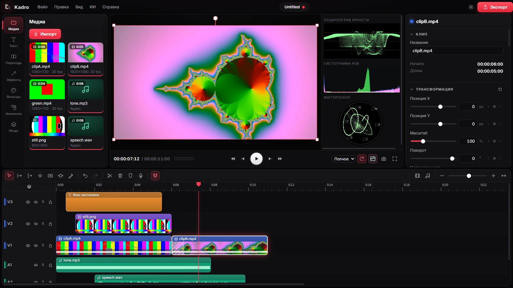
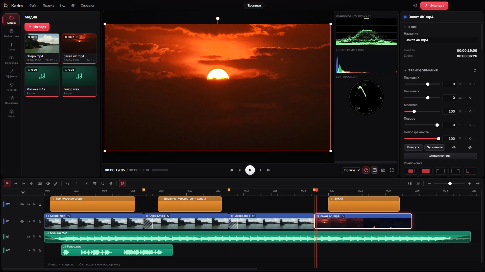

Настоящий таймлайн
Неограниченные дорожки, ripple-, roll-, slip- и slide-правка, нарезка по сменам сцен, метки в ритм музыки, соло и блокировка дорожек.
Kadro — бесплатный видеоредактор для Windows. Всё, за что другие просят деньги: многодорожечный таймлайн, цветокоррекция, хромакей, ИИ-субтитры и удаление фона — доступно каждому и навсегда.

То, что обычно спрятано в дорогих тарифах, в Kadro есть сразу.
Неограниченные дорожки, ripple-, roll-, slip- и slide-правка, нарезка по сменам сцен, метки в ритм музыки, соло и блокировка дорожек.
Цветовые круги, RGB-кривые, выборочный цвет HSL, LUT (.cube), 18 режимов наложения, видеоскопы, хромакей и маски.
Автосубтитры и удаление фона работают локально: без облака, кредитов и отправки ваших видео куда-либо.
Шумоподавление, нормализация громкости по EBU R128, автоприглушение музыки под голос, эквалайзер, компрессор и запись голоса.
Шейдерные эффекты и переходы, анимированные оверлеи и фоны, стикеры, стабилизация, «картинка в картинке» и свои моды на GLSL.
Аппаратное кодирование NVENC, Quick Sync и AMF. MP4, WebM, ProRes, GIF — до 4K.
Бесплатные видео, фото, музыка и звуки прямо в программе — с авторами и лицензиями, которые сохраняются в проекте.
24 встроенных шрифта с кириллицей, 22 стиля титров, градиенты, обводки, тени и анимации появления.
Пять тем, включая светлую, любой цвет акцента, масштаб интерфейса. Украинский, русский и английский языки.

Kadro не продаёт лицензии и не прячет функции за платной версией. Нет водяного знака на экспорте, нет пробного периода и нет учётной записи. Все получают одну и ту же программу.
Исходный код открыт под лицензией MIT: его можно проверить, изменить и собрать самому. Программа не собирает данные и работает без интернета — сеть нужна только один раз, чтобы скачать ИИ-модели, и для онлайн-библиотеки.
| Kadro | Платные редакторы | |
|---|---|---|
| Цена | 0 ₽ | подписка или лицензия |
| Водяной знак | нет | в бесплатной версии |
| ИИ-функции | локально, без лимитов | в облаке, за кредиты |
| Учётная запись | не нужна | обязательна |
| Открытый код | да | нет |
Донаты добровольны и ничего не открывают — у всех одинаковая программа. Они помогают тратить больше времени на новые функции.
Ещё можно помочь бесплатно: рассказать о Kadro, сообщить об ошибке или сделать мод.
Подвоха нет. Kadro — проект с открытым кодом, который живёт на добровольной поддержке пользователей.
Так SmartScreen реагирует на новые программы без платной цифровой подписи. Нажмите «Подробнее» → «Выполнить в любом случае». Исходный код открыт, и установщик можно собрать самому.
Нет. Только при первом использовании ИИ-функций программа один раз скачивает модели (от 40 до 250 МБ), а онлайн-библиотека, конечно, работает через сеть.
Windows 10 и 11 (64-бит). Сборки для macOS и Linux планируются.
Да. Всё, что вы смонтировали, принадлежит вам, без каких-либо отчислений и пометок.
Эффекты, переходы и анимированные элементы пишутся на GLSL в файлах .vrmod. Инструкция — в MODS.md в репозитории.